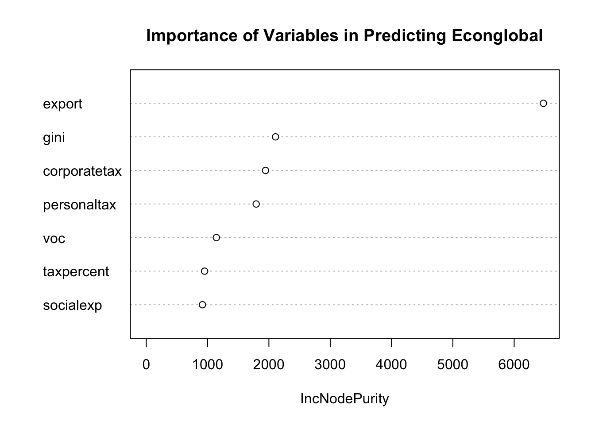

library(randomForest)
library(tidyverse)Bagging and Random Forest
Lesson 1.6, Applied Machine Learning
Table of Contents
- Bootstrap Sampling
- Bagging and Random Forest
- Bagging and Random Forest in R
- Importance Statistics
- Importance Statistics in R
Remember to load tidyverse. We will also need the package randomForest.
Let us also load the dataset we will be using for these examples (feel free to load your own dataset)
df <- read_csv("voctaxdata.csv")Bootstrap Sampling
Bagging and Random Forest are tree-based methods that build on the simple tree regression. While regression trees are a cool way to visualise predictions, they tend to have high variance: just slightly changing the data will result in a completely different tree being generated.
- This is an issue, especially if we are interested in predicting out-of-sample observations.
Bagging (Bootstrap Aggergation) is a procedure for reducing the variance of a statistical learning method.
In a set of \(n\) samples \(Z_1, Z_2, ... , Z_n\), each with variance \(\sigma^2\), the variance of the mean \(\bar{Z}\)’s of the observations is \(\sigma^2/n\)
What this means, essentially, is that averaging a set of predictions will reduce the variance in the predictions.
However, there is one issue: we only have one prediction (from our training data). How do average a set of predictions if we only have one data set in which to predict from?
The answer is Bootstrap Sampling:
Bootstrap Sampling is basically sampling with replacement from the data we already have.
To create a bootstrap sample, we choose 1 observation at random from our original sample. We add that observation to our bootstrap sample, and replace it back in the original sample. We then draw another observation, add it to our bootstrap sample, and replace it back. We do this \(n\) times ( \(n\) being the size of the bootstrap sample)
If we do this several times creating different Bootstrap Samples, we will have a few similar, but slightly different data sets. We are essentially replicating the process of obtaining new data sets, without actually gathering more data.
Now, with our multiple data sets, we can find the average, and reduce variance.
Bagging and Random Forest
Bagging (Bootstrap Aggregation) applies Bootstrap Sampling to Tree Regressions.
We first generate \(B\) different samples using Bootstrap Sampling.
We then train a tree on each different sample, creating a prediction function \(f_b(x)\) for each sample, where \(b\) represents the \(b\)th sample.
Then, we average all the predictions to obtain our prediction function:
\[ f_{bag}(x)=\frac{1}{B} \sum\limits_{b=1}^{B} f_b(x) \]
Bagging reduces variance, and is one of the most accurate prediction methods, often outperforming linear and non-linear methods.
However, Bagging accuracy can still be improved. Bagging has an issue that the trees that are created are heavily correlated.
Heavily correlated in this sense means that in general, the trees will have the same top-level \(x\) variable.
This is a problem if we have on very strong predictor \(x\) compared to others. This means that our trees will almost always have that \(x\) at the top of the tree, making the trees similar despite our different samples.
Averaging highly correlated trees does not reduce variance very much.
Reducing the correlation in predictions decreases variance, which is good for test set error.
Random Forest address this issue by not only Bootstrap Sampling observations like Bagging does, but also sampling predictor \(x\) variables.
For example, lets say you have 16 independent variables in your tree.
Bagging would include all 16 independent variables in every true.
Random Forest would instead sample 4 out of the 16 independent variables to use for every tree
- Typically, Random Forest samples the square root of the number of independent variables - this has been shown through testing to be the optimal amount on average.
This means that Random Forest will exclude strong predictors in many trees, giving the other important predictors more of a chance.
Thus, Random Forest will have less correlated trees, which further reduces variance when we take the average.
Random Forest is typically more accurate when it comes to out of set prediction than Bagging. However, this is not always the case, so it is important to check the explanatory power of both before altering.
One disadvantage is that we cannot have the easy interpretation of simple Tree Regressions. This is because it is impractical to view 500 different trees from different samples.
- One way to remedy this is with importance statistics, which can illustrate the most important variables in a Bagging/Random Forest model.
Uses of Bagging and Random Forest in Political Science research:
Bagging and Random Forest are generally significantly more accurate in predictions than their linear/non-linear counterparts. This is especially the case when the relationships are not linear.
For example, Bagging and Random Forest have much better success in predictions of Civil War than linear/non-linear models do.
Bagging and Random Forest in R
To conduct Bagging and Random Forest, we need the package randomForest:
library(randomForest)Remember to load tidyverse.
library(tidyverse)Let us also load the dataset we will be using for these examples (feel free to load your own dataset)
df <- read_csv("voctaxdata.csv")Bagging Model in R
Bagging in R is conducted using the randomForest() function. We can view the summary by simply printing the regression variable.
# Remember to install and load package randomForest
# set a seed to keep the same results when we re-run
set.seed(100)
bagging <- randomForest(Y ~ .,
data = df,
na.action = na.omit,
mtry = 9, # set to number of IV
importance = TRUE)
# call model variable to see output
baggingThese are the parts of the syntax that can be altered:
bagging is the variable I am saving my regression model to. You can name this anything you want to.
Y is the Y variable (Dependent variable) you are trying to predict. Replace this with the variables you want to use.
“.” after the tilda ~ tells R to include all other variables in the data frame as independent variables. This is very common for Bagging since you will typically include all variables.
- Note: Make sure to de-select variables you don’t want to include in the model, such as ID, date, etc.
df is the name of the data frame that I am drawing these X and Y variables from. Replace this with the name of your data frame.
NOTE: Remember to include the sections na.action = na.omit, and importance = TRUE.
Random Forest in R
To create a Random Forest model, the syntax is the exact same, except for the fact we set mtry to the square root of the number of independent variables in your regression.
# Remember to install and load package randomForest
# set a seed to keep the same results when we re-run
set.seed(100)
randomforest <- randomForest(Y ~ .,
data = df,
na.action = na.omit,
mtry = 3, # square root of number of IV
importance = TRUE)
# call model variable to see output
randomforestPredictions in R
We can generate predictions with the predict() function (just like we did in the Regression Tree section)
#create new df for comparison of actual and prediction
df_results <- df %>%
select(Y) #optional, may help with readability
# newdata is what values of X1, X2... to predict for.
df_results$prediction <- predict(bagging, newdata = df)
# brief glimpse of the results
head(df_results)These are the parts of the syntax that can be altered:
df_results is the results data frame I am creating. You can name this anything you want to.
Y is the Y variable I am trying to predict. Replace this with the name of your Y variable.
bagging is the variable I am saved my prior model to. Rename this to what your prior model was named.
df is the name of the data frame that houses the \(x\) values I want to predict for. Replace this with the name of your data frame with the \(x\) values you want to predict for.
Example in R
Take the following example of predicting econglobal using the rest of my independent variables:
# set a seed to keep the same results when we re-run
set.seed(100)
rf_example <- randomForest(econglobal ~ .,
data = df,
na.action = na.omit,
mtry = 3, #approx sq rt of 7
importance = TRUE)
# call model variable to see output
rf_example
Call:
randomForest(formula = econglobal ~ ., data = df, mtry = 3, importance = TRUE, na.action = na.omit)
Type of random forest: regression
Number of trees: 500
No. of variables tried at each split: 3
Mean of squared residuals: 3.851229
% Var explained: 93.68The output shows us some info about the tree we ran. The most useful parts of the above output are:
Mean of Squared Residuals: a general measure of how well the model performed.
% Variance explained: how well our independent variables explain the variation in the Y variable. Similar to R^2 from linear regression.
However, we can get more detailed information on this model. See the importance statistics section for more information.
Now, let me run the predictions for in-sample data.
#create new df for comparison of actual and prediction
df_results <- df %>%
select(econglobal)
# newdata is what values of X1, X2... to predict for.
df_results$prediction <- predict(rf_example, newdata = df)
# brief glimpse of the results
head(df_results)# A tibble: 6 × 2
econglobal prediction
<dbl> <dbl>
1 66.9 67.2
2 66.9 67.5
3 68.4 68.5
4 69.6 68.5
5 66.6 66.9
6 67.4 67.0Importance Statistics
One downside we mentioned about Bagging and Random Forest is that it is not as easily interpretable as simple Regression Trees.
Regression Trees produce a nice diagram, with the most important variable at the top.
However, because Bagging and Random Forest average hundreds or thousands of different trees together, we can’t really diagram every one individually.
However, importance statistics can help us interpret Bagging and Random Forest models.
We can calculate the importance of a variable through the reduction in the sum of squared errors whenever a variable is chosen to split.
Remember, when we calculate a simple Tree Regression, we note which variable reduces the residual sum of squares the most.
To calculate importance, we simply “remember” the reduction of the residual sum of squares for each variable when split, in each regression.
This is why in our earlier code for Bagging and Random Forest, we specified a condition importance = TRUE. We are telling the machine to “remember” the reduction in residual sum of squares.
We can then graph the reduction in sum of squared errors when a variable is chosen to split:

We can clearly see that export is the most important X variable in predicting our Y variable, econglobal.
Uses of Importance Statistics in Political Science research:
Often when we are making predictions (as we often do with Bagging and Random Forest), we want to know what is driving these predictions. This can help us plan and act, and potentially prevent the prediction from coming true.
For example, if we know what variables are frequently important in predicting civil wars, this may inform our approach in attempting to prevent civil wars.
Importance Statistics in R
To conduct Importance Statistics, we need the package randomForest:
library(randomForest)Remember to load tidyverse.
library(tidyverse)Let us also load the dataset we will be using for these examples (feel free to load your own dataset)
df <- read_csv("voctaxdata.csv")Importance Plot in R
To see the importance of each predictor variable, we can use the varImpPlot() function. YOU MUST HAVE ALREADY RUN A BAGGING/RANDOM FOREST MODEL TO DO THIS. The syntax is as follows.
# You need the package randomForest loaded
varImpPlot(model_variable,
main = "Title of the Graph",
type = 2)These are the parts of the syntax that can be altered:
model_variable is the model I am running my importance plot on. Rename this to the variable you saved your model to.
“Title of the Graph” is the title you put on the graph. You can change this to anything you want, just remember quotations.
NOTE: don’t change type = 2.
Example in R
Take this following example:
varImpPlot(rf_example,
main = "Importance of Variables in Predicting Econglobal",
type = 2)
The higher the mean decrease in node purity, the more influential the predictor is in predicting the outcome variable.
- In our example, export is the most important predictor of our Y variable, econglobal.